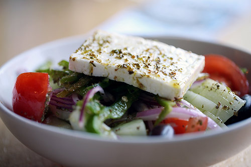

Greek salad or horiatiki salad is a popular salad in Greek cuisine generally made with pieces of tomatoes, cucumbers, onion, feta cheese (usually served as a slice on top of the other ingredients), and olives (typically Kalamata olives) and dressed with salt, pepper, Greek oregano, and olive oil. Common additions include green bell pepper slices or caper berries (especially on the Dodecanese islands). Greek salad is often imagined as a farmer's breakfast or lunch, as its ingredients resemble those that a Greek farmer might have on hand.